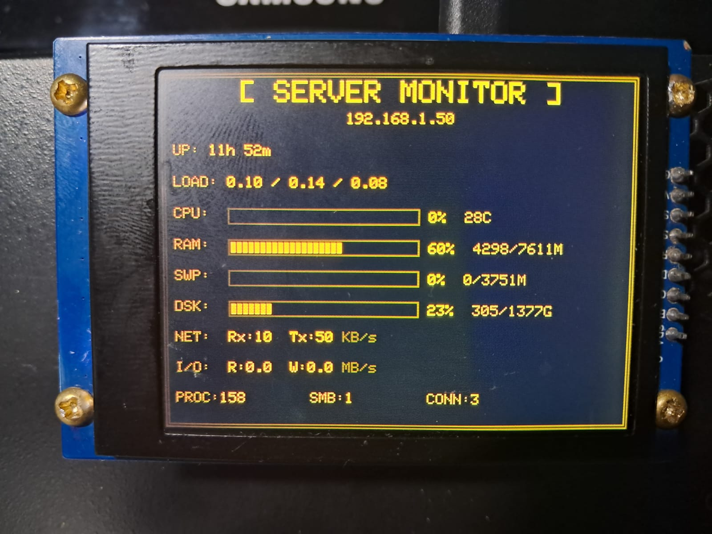

DATA: 2026-01-13 | LINGUAGEM: Python + C++ | LICENÇA: MIT

Sistema de monitoramento de servidor em tempo real com display TFT estilo CRT âmbar. Exibe estatísticas do sistema em uma tela 320x240 conectada a um microcontrolador STM32 (BlackPill F411CE).
Este projeto consiste em dois componentes principais:
| Componente | Especificação |
| Microcontrolador | STM32F411CE (BlackPill) |
| Display | TFT 2.4" 320x240 ST7789 |
| Programador | ST-Link V2 |
| Conexão | USB (CDC Serial) |
Comunicação serial usando formato key=value, terminando com END:
ip=192.168.1.100 up=5d 12h 30m cpu_pct=45 cpu_temp=52 ram_pct=67 END
Firmware:
cd firmware pio run -t upload
Server Client:
cd server-client pip install -r requirements.txt python src/monitor.py /dev/ttyACM0